pacman::p_load(sf, spNetwork, tmap, tidyverse,
spatstat, sparr, stpp, terra)
set.seed(1234)Take-home Exercise 1: Geospatial Analytics for Public Safety
Network-constrained and Spatio-temporal Point Patterns of Road Traffic Accidents in the Bangkok Metropolitan Region, 2022
View the Executive Summary (slides) →
1. Introduction
Road traffic crashes are a major public-safety problem in Thailand. WHO estimates about 18,218 road deaths in 2021, a rate of 25.4 per 100,000 population and one of the highest in Asia, with motorcyclists accounting for most deaths. The Bangkok Metropolitan Region (BMR), comprising Bangkok and five vicinity provinces, is the country’s largest urban area, where crash patterns are likely to vary strongly across space and time. However, a concentration of crashes does not necessarily mean higher risk, as it may also reflect traffic volume, road density or how crashes are recorded.
Road accidents can only happen on roads, so this study treats them as events on a road network. Following the Network Constrained Spatial Point Patterns Analysis (NetSPAA) approach, the main analysis uses network kernel density estimation (NKDE) for first-order properties and network K- and G-functions for second-order properties. Planar and spatio-temporal methods from earlier exercises are used to describe temporal variation and to compare planar and network results.
1.1 Research questions
- Where and when are road traffic accidents in BMR concentrated in 2022? (first-order)
- Are accidents clustered, regular or approximately random along the road network, compared with complete spatial randomness on the network? (second-order)
- Do conclusions change between planar and network-constrained views, and between bandwidths? (comparison and value-added)
2. Getting Started
The four packages used in the network-constrained analysis are loaded first, followed by the packages used for planar and spatio-temporal analysis. A fixed random seed makes all Monte Carlo simulations reproducible.
| Package | Purpose |
|---|---|
| sf | import, wrangle and transform geospatial data |
| spNetwork | lixels, network KDE, network K- and G-functions |
| tmap | thematic mapping |
| tidyverse | data wrangling, dates (month(), yday()) and statistical graphics |
| spatstat | ppp/owin objects, planar KDE, Clark-Evans test, G/L functions, envelopes |
| sparr | spatio-temporal KDE |
| stpp | spatio-temporal K-function |
| terra | convert planar KDE output to a raster for tmap |
3. The Data
| Dataset | Source | Format | Accessed | Coverage |
|---|---|---|---|---|
| Thailand Road Accident [2019-2022] | Kaggle (Thaweewat R.) | CSV | 2026-09-23 | Thailand, 2019-2022 (2022 used) |
| Thailand ADM1 boundaries | geoBoundaries | Shapefile | 2026-09-23 | Thailand provinces |
| OpenStreetMap roads | Geofabrik (extract 2026-09-21) | Shapefile | 2026-09-22 | Thailand |
3.1 Study area: Bangkok Metropolitan Region (BMR)
BMR is operationalised as Bangkok plus its five vicinity provinces, taken from the full-resolution geoBoundaries ADM1 layer (not the simplified version, to avoid wrongly dropping accidents near provincial borders and the coastline). The province names are checked first, because five of the six end with ” Province”.
table(st_read(dsn = "data/geospatial",
layer = "geoBoundaries-THA-ADM1",
quiet = TRUE)$shapeName)
Amnat Charoen Province Ang Thong Province
1 1
Bangkok Bueng Kan Province
1 1
Buri Ram Province Chachoengsao Province
1 1
Chai Nat Province Chaiyaphum Province
1 1
Chanthaburi Province Chiang Mai Province
1 1
Chiang Rai Province Chon Buri Province
1 1
Chumphon Province Kalasin
1 1
Kamphaeng Phet Province Kanchanaburi Province
1 1
Khon Kaen Province Krabi Province
1 1
Lampang Province Lamphun Province
1 1
Loei Province Lopburi Province
1 1
Mae Hong Son Province Maha Sarakham Province
1 1
Mukdahan Province Nakhon Nayok Province
1 1
Nakhon Pathom Province Nakhon Phanom Province
1 1
Nakhon Ratchasima Province Nakhon Sawan Province
1 1
Nakhon Si Thammarat Province Nan Province
1 1
Narathiwat Province Nong Bua Lam Phu Province
1 1
Nong Khai Province Nonthaburi Province
1 1
Pathum Thani Province Pattani Province
1 1
Phangnga Province Phatthalung Province
1 1
Phayao Province Phetchabun Province
1 1
Phetchaburi Province Phichit Province
1 1
Phitsanulok Province Phra Nakhon Si Ayutthaya Province
1 1
Phrae Province Phuket Province
1 1
Prachin Buri Province Prachuap Khiri Khan Province
1 1
Ranong Province Ratchaburi Province
1 1
Rayong Province Roi Et Province
1 1
Sa Kaeo Province Sakon Nakhon Province
1 1
Samut Prakan Province Samut Sakhon Province
1 1
Samut Songkhram Province Saraburi Province
1 1
Satun Province Si Sa Ket Province
1 1
Sing Buri Province Songkhla Province
1 1
Sukhothai Province Suphan Buri Province
1 1
Surat Thani Province Surin Province
1 1
Tak Province Trang Province
1 1
Trat Province Ubon Ratchathani Province
1 1
Udon Thani Province Uthai Thani Province
1 1
Uttaradit Province Yala Province
1 1
Yasothon Province
1 bmr_names <- c("Bangkok", "Nonthaburi Province", "Nakhon Pathom Province",
"Pathum Thani Province", "Samut Prakan Province",
"Samut Sakhon Province")
bmr_sf <- st_read(dsn = "data/geospatial",
layer = "geoBoundaries-THA-ADM1") %>%
filter(shapeName %in% bmr_names) %>%
st_transform(crs = 32647)Reading layer `geoBoundaries-THA-ADM1' from data source
`/Users/wangxiaohan/ISSS626-GAA/Take-home_Ex/Take-home_Ex01/data/geospatial'
using driver `ESRI Shapefile'
Simple feature collection with 77 features and 5 fields
Geometry type: MULTIPOLYGON
Dimension: XY
Bounding box: xmin: 97.34381 ymin: 5.612851 xmax: 105.6368 ymax: 20.46483
Geodetic CRS: WGS 84The output should show 6 provinces in WGS 84 / UTM zone 47N (EPSG:32647). st_is_valid() checks that no polygon geometry is invalid.
nrow(bmr_sf)[1] 6st_crs(bmr_sf)$epsg[1] 32647any(!st_is_valid(bmr_sf))[1] FALSEbmr_union <- st_union(bmr_sf)3.2 Road accident data
acc_raw <- read_csv("data/aspatial/thai_road_accident_2019_2022.csv",
show_col_types = FALSE)
glimpse(acc_raw)Rows: 81,735
Columns: 18
$ acc_code <dbl> 571905, 3790870, 599075, 571924, 599523, 5…
$ incident_datetime <dttm> 2019-01-01 00:00:00, 2019-01-01 00:03:00,…
$ report_datetime <dttm> 2019-01-02 06:11:00, 2020-02-20 13:48:00,…
$ province_th <chr> "ลพบุรี", "อุบลราชธานี", "ประจวบคีรีขันธ์", "เชียงใ…
$ province_en <chr> "Loburi", "Ubon Ratchathani", "Prachuap Kh…
$ agency <chr> "department of rural roads", "department o…
$ route <chr> "แยกทางหลวงหมายเลข 21 (กม.ที่ 31+000) - บ้านวั…
$ vehicle_type <chr> "motorcycle", "private/passenger car", "mo…
$ presumed_cause <chr> "driving under the influence of alcohol", …
$ accident_type <chr> "other", "rollover/fallen on straight road…
$ number_of_vehicles_involved <dbl> 1, 1, 2, 1, 1, 1, 2, 2, 2, 2, 1, 1, 1, 1, …
$ number_of_fatalities <dbl> 0, 0, 1, 0, 0, 0, 0, 1, 3, 0, 0, 1, 0, 0, …
$ number_of_injuries <dbl> 2, 2, 0, 1, 0, 2, 2, 0, 0, 1, 1, 0, 1, 1, …
$ weather_condition <chr> "clear", "clear", "clear", "clear", "clear…
$ latitude <dbl> 14.959105, 15.210738, 12.374259, 18.601721…
$ longitude <dbl> 100.87346, 104.86269, 99.90795, 98.80420, …
$ road_description <chr> "straight road", "straight road", "wide cu…
$ slope_description <chr> "no slope", "no slope", "slope area", "no …incident_datetime is already parsed as a date-time (<dttm>), and latitude and longitude are numeric.
3.3 Road network data
Following the NetSPAA workflow, the road network is imported as a line feature layer. Only roads intersecting BMR are read, because the full Thailand layer is over 600 MB; the spatial filter is converted to EPSG:4326 to match the OSM file. Only major road classes are kept, because all accidents in the dataset are recorded by national road agencies (Section 5.7), which manage these roads.
bmr_wkt <- bmr_union %>%
st_transform(crs = 4326) %>%
st_as_text()
major_roads <- c("motorway", "motorway_link", "trunk", "trunk_link",
"primary", "primary_link", "secondary", "secondary_link",
"tertiary", "tertiary_link")
network <- st_read(dsn = "data/geospatial",
layer = "gis_osm_roads_free_1",
wkt_filter = bmr_wkt) %>%
filter(fclass %in% major_roads) %>%
select(osm_id, fclass, name) %>%
st_transform(crs = 32647)Reading layer `gis_osm_roads_free_1' from data source
`/Users/wangxiaohan/ISSS626-GAA/Take-home_Ex/Take-home_Ex01/data/geospatial'
using driver `ESRI Shapefile'
Simple feature collection with 621938 features and 10 fields
Geometry type: LINESTRING
Dimension: XY
Bounding box: xmin: 99.76608 ymin: 13.43053 xmax: 101.0062 ymax: 14.32775
Geodetic CRS: WGS 84spNetwork expects both layers to carry complete CRS information, so the CRS and the road classes kept are checked.
st_crs(network)$epsg[1] 32647table(network$fclass)
motorway motorway_link primary primary_link secondary
1268 1720 6273 2452 7339
secondary_link tertiary tertiary_link trunk trunk_link
2073 5725 425 1464 668 dir.create("data/rds", recursive = TRUE, showWarnings = FALSE)
write_rds(network, "data/rds/network.rds")4. Study Design
4.1 Point event definition
A point event is one recorded road traffic accident (one unique acc_code) that occurred between 1 January and 31 December 2022, located by its reported longitude and latitude, and falling inside BMR. For the network analysis, events must also lie within 100 m of a major road, and are snapped to the network by spNetwork. Events are treated as an unmarked point pattern: attributes such as fatalities or vehicle type are not used as weights.
| Issue | Handling | Section |
|---|---|---|
| Duplicate records | Removed by unique acc_code |
5.3 |
| Repeated locations | Kept, counted with duplicated() and discussed |
5.9 |
| Missing coordinates | Removed | 5.2 |
| Swapped lat/long | Checked and corrected | 5.2 |
| Coordinates outside Thailand | Removed | 5.2 |
| Outside BMR | Removed with st_intersects() |
5.4 |
| Outside 2022 | Removed | 5.1 |
| More than 100 m from a major road | Excluded from the network analysis | 5.10 |
4.2 Spatial and temporal study window
| Item | Decision | Justification |
|---|---|---|
| Spatial window | Union of 6 BMR provinces (planar); major road network within BMR (network) | Operationalises “Bangkok Greater Metropolitan Area” with official provincial boundaries; the network is the space where accidents can occur |
| Temporal window | 1 Jan - 31 Dec 2022 | Required by the brief for the 2019-2022 dataset |
| Temporal unit | Month (STKDE, 6.5); day of year (STKDE, 6.6; space-time K-function, 7.3; daily graphic, 6.1) | Months give enough events per slice; day of year allows data-driven temporal bandwidths and shows holiday peaks |
4.3 Methodological decisions
| Decision | Choice | Justification |
|---|---|---|
| CRS | WGS 84 / UTM 47N (EPSG:32647) | Metric units for bandwidth and distance; zone 47N covers Bangkok |
| Network | OSM major roads (motorway to tertiary, with links) | Matches the agencies that recorded the accidents |
| Lixels | 500 m, minimum 250 m | About half the NKDE bandwidth, giving detail without too many lixels |
| NKDE | Quartic kernel, simple method, bandwidth 1 km (sensitivity: 0.5 and 2 km) | Quartic and simple follow the NetSPAA workflow; 1 km covers junction-to-corridor scale |
| Network K/G-functions | 0-5 km, step 100 m, width 200 m, 50 simulations, Bangkok only | Range covers local to corridor scale; Bangkok only for computation time |
| Planar KDE | Gaussian kernel; bw.diggle, bw.ppl, bw.scott, fixed 0.5-5 km, adaptive compared | Used for comparison with the network view |
| Planar edge correction | Border (default for large patterns) | Fast for thousands of points |
| Planar simulations | 99 | Global envelopes with rank 1 give α = 0.01 |
| Null models | CSR on the network (binomial process on the network); planar CSR for comparison | Network CSR accounts for the fact that accidents can only occur on roads |
4.4 Analytical assumptions
| Method | Key assumption | Reasonable here? |
|---|---|---|
| NKDE | Accidents occur on the network, and network distance is the relevant distance | Yes for accidents within 100 m of a major road; not for accidents on minor roads, which are excluded |
| Network K/G vs network CSR | Accidents are equally likely anywhere on the network | Partly: traffic volume varies strongly between roads, so clustering may reflect exposure rather than interaction |
| Planar KDE | Accidents can occur anywhere in the window | No: planar KDE spreads intensity into areas without roads |
| Planar G/L vs CSR | Constant intensity across BMR | No: intensity clearly varies, so clustering under planar CSR may just reflect uneven intensity |
| STKDE | Spatial pattern changes smoothly over time | Reasonable for seasonal change, but short holiday peaks are smoothed out |
| Space-time K-function | Constant intensity in space and time | No: like planar CSR, it cannot separate interaction from uneven intensity |
| All methods | Recorded accidents represent all accidents | No: data come from national road agencies, so city streets are likely under-recorded |
5. Data Wrangling and Quality Assessment
5.1 Temporal filtering and derived time fields
Records are kept if they occurred in 2022. The boundaries are written as seconds since 1 January 1970 (UTC), because incident_datetime is stored in UTC: 1640995200 is 2022-01-01 00:00 and 1672531200 is 2023-01-01 00:00.
sum(is.na(acc_raw$incident_datetime))[1] 0acc_2022 <- acc_raw %>%
filter(as.numeric(incident_datetime) >= 1640995200,
as.numeric(incident_datetime) < 1672531200) %>%
mutate(DayofYear = yday(incident_datetime)) %>%
mutate(Month_num = month(incident_datetime)) %>%
mutate(Month_fac = month(incident_datetime,
label = TRUE,
abbr = FALSE))
nrow(acc_2022)[1] 210325.2 Missing, swapped and invalid coordinates
sum(is.na(acc_2022$latitude) | is.na(acc_2022$longitude))[1] 189Records whose latitude and longitude appear to be swapped (latitude in Thailand’s longitude range and vice versa) are corrected rather than dropped.
acc_fixed <- acc_2022 %>%
mutate(swapped = latitude >= 97 & latitude <= 106 &
longitude >= 5 & longitude <= 21) %>%
mutate(latitude_fix = ifelse(swapped, longitude, latitude),
longitude_fix = ifelse(swapped, latitude, longitude))
sum(acc_fixed$swapped, na.rm = TRUE)[1] 0acc_valid <- acc_fixed %>%
filter(!is.na(latitude_fix), !is.na(longitude_fix)) %>%
filter(longitude_fix >= 97, longitude_fix <= 106,
latitude_fix >= 5, latitude_fix <= 21)5.3 Duplicate records
sum(duplicated(acc_valid$acc_code))[1] 0acc_dedup <- acc_valid %>%
filter(!duplicated(acc_code))5.4 Creating sf object and spatial filtering
acc_sf <- acc_dedup %>%
st_as_sf(coords = c("longitude_fix", "latitude_fix"),
crs = 4326) %>%
st_transform(crs = 32647)
acc_bmr_sf <- acc_sf %>%
filter(lengths(st_intersects(acc_sf, bmr_union)) > 0)5.5 Location consistency check
Each point is joined to the province it falls in and compared with the province recorded in the data. distinct() removes duplicate rows created by points lying exactly on a provincial border.
data.frame(
step = c("Raw (2019-2022)", "Year 2022", "Valid coordinates",
"After de-duplication", "Inside BMR"),
n = c(nrow(acc_raw), nrow(acc_2022), nrow(acc_valid),
nrow(acc_dedup), nrow(acc_bmr_sf))
) step n
1 Raw (2019-2022) 81735
2 Year 2022 21032
3 Valid coordinates 20843
4 After de-duplication 20843
5 Inside BMR 3599Of the 81,735 records, 21,032 occurred in 2022. All dates were parsed successfully. 189 records lacked coordinates and were removed; no swapped or out-of-Thailand coordinates and no duplicate acc_code values were found. 3,599 accidents fall inside BMR.
5.6 Accidents by province
table(acc_bmr_sf$province_en)
Bangkok Kanchanaburi Nakhon Pathom
1801 4 134
Nonthaburi Pathum Thani Phra Nakhon Si Ayutthaya
175 486 4
Samut Prakan Samut Sakhon unknown
669 324 2 5.7 Observation process
table(acc_bmr_sf$agency)
department of highways department of rural roads
2883 246
expressway authority of thailand
470
NoteInterpretation
All 3,599 BMR accidents were reported by national road agencies: the Department of Highways (80.1%), the Expressway Authority of Thailand (13.1%) and the Department of Rural Roads (6.8%). None come from the Bangkok Metropolitan Administration, which manages most local streets in Bangkok. Accidents on these streets are therefore likely under-represented, and concentrations in the following analysis should be read as patterns of recorded accidents on highways, expressways and rural roads, not of all accidents in BMR.
5.8 Mapping the geospatial data
tm_shape(bmr_sf) +
tm_polygons(fill = "grey95") +
tm_text("shapeName", size = 0.7) +
tm_shape(acc_bmr_sf) +
tm_dots(size = 0.1, fill = "red") +
tm_title("Road accidents in BMR, 2022")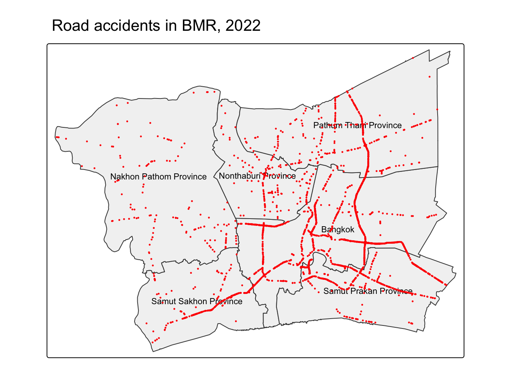
NoteInterpretation
The 3,599 recorded accidents are not spread evenly across BMR but align along linear corridors radiating from Bangkok towards Pathum Thani, Samut Prakan and Samut Sakhon, with sparser points in Nakhon Pathom. Inner Bangkok shows relatively few accidents despite its density, consistent with the absence of BMA-managed streets from the data (Section 5.7). This visual concentration does not yet indicate clustering or higher risk: it must be assessed against a reference model (Section 7), and the linear pattern suggests that the road network itself shapes where accidents can occur.
tm_shape(bmr_sf) +
tm_polygons(fill = "grey95") +
tm_shape(acc_bmr_sf) +
tm_dots(size = 0.1, fill = "red") +
tm_facets(by = "Month_fac",
free.coords = FALSE)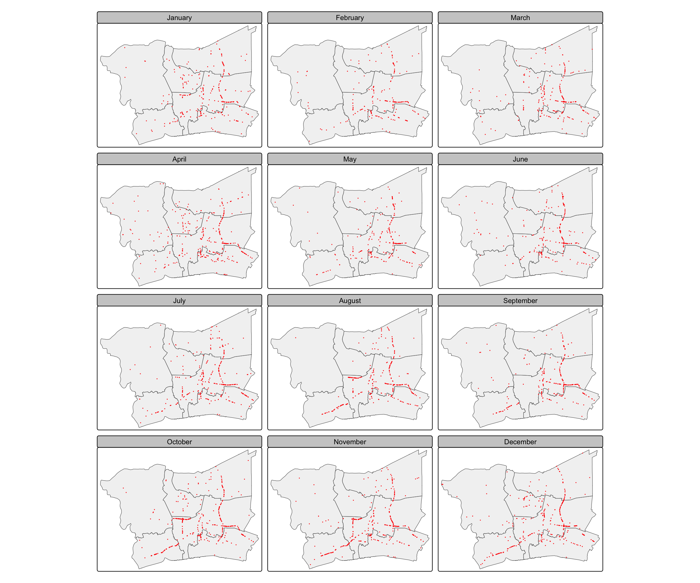
NoteInterpretation
Faceting by month shows that accidents occur along the same major corridors throughout 2022, suggesting that the spatial structure of recorded accidents is largely stable over time rather than shifting between areas. Differences in the number of points between months are difficult to judge visually from dot maps; monthly counts (Section 6.1) and spatio-temporal KDE (Sections 6.5 and 6.6) are used to assess temporal variation in intensity more rigorously.
5.9 Converting to spatstat objects
For the planar and spatio-temporal methods, the accidents are converted to a ppp object and combined with an owin object of BMR. st_geometry() keeps only the point locations, so the ppp object carries no marks.
acc_ppp <- as.ppp(st_geometry(acc_bmr_sf))
summary(acc_ppp)Planar point pattern: 3599 points
Average intensity 3.326903e-07 points per square unit
*Pattern contains duplicated points*
Coordinates are given to 10 decimal places
Window: rectangle = [587647.2, 709360] x [1487640.2, 1576520.5] units
(121700 x 88880 units)
Window area = 10817900000 square unitsany(duplicated(acc_ppp))[1] TRUEsum(duplicated(acc_ppp))[1] 321Some accidents share their exact location with another accident. These may be repeated accidents at the same site, or locations recorded at fixed reference points such as kilometre markers. They are kept, because removing them would discard real accidents; the effect on the planar G-function is discussed in Section 7.2.
bmr_owin <- as.owin(bmr_union)
plot(bmr_owin)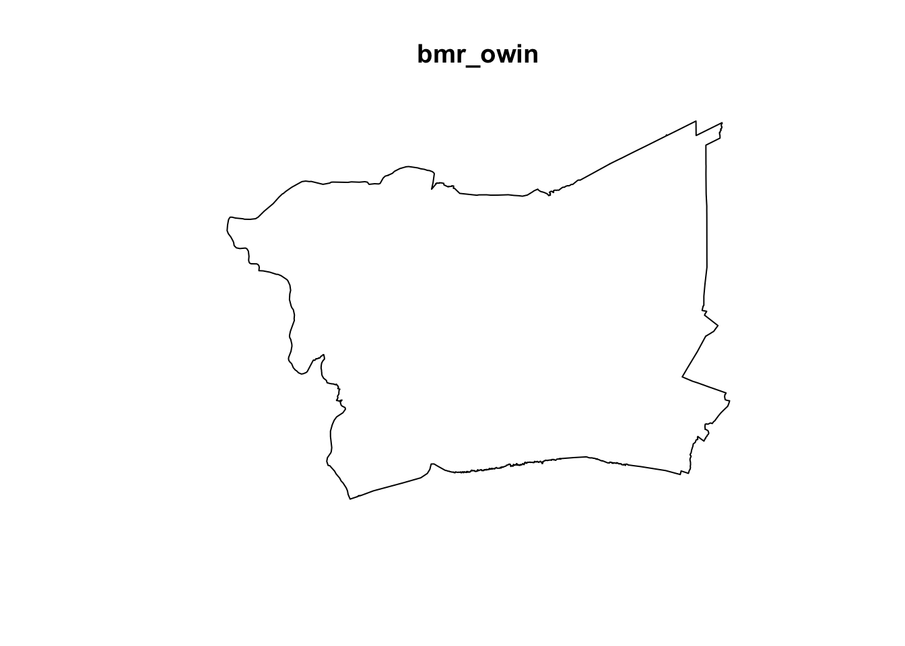
accBMR_ppp <- acc_ppp[bmr_owin]
accBMR_ppp.km <- rescale.ppp(accBMR_ppp, 1000, "km")
plot(accBMR_ppp.km)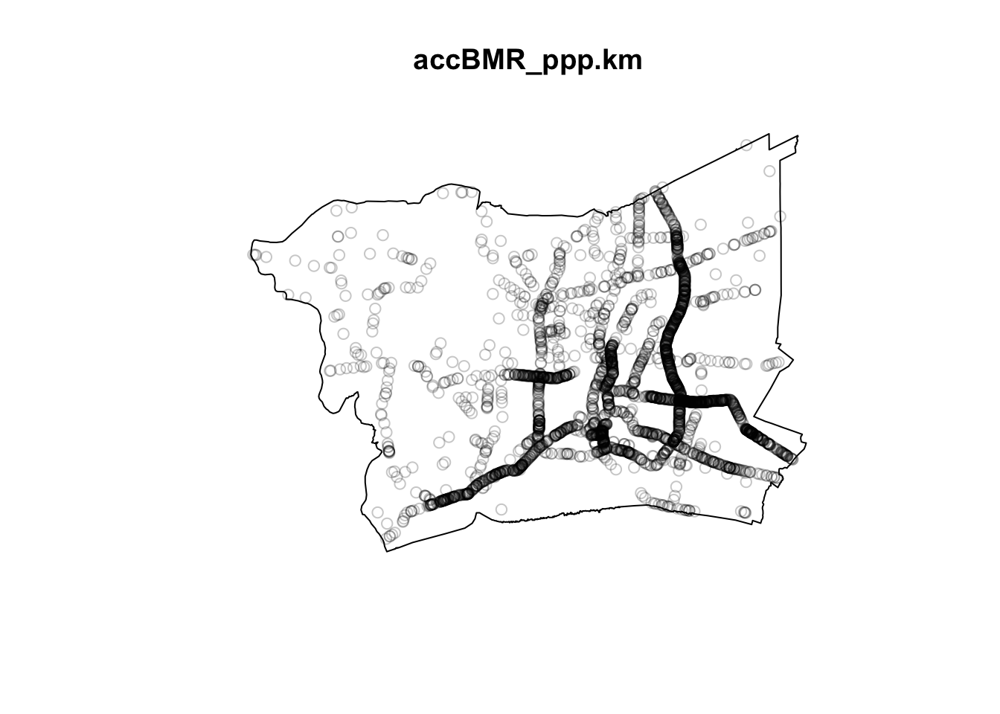
5.10 Preparing events for the network analysis
spNetwork snaps each event to its nearest road segment. To avoid snapping accidents that lie far from any major road, accidents are kept only if they fall within a 100 m buffer of the major road network.
road_buffer <- st_buffer(network, dist = 100)
acc_bmr_sf <- acc_bmr_sf %>%
mutate(near_road = lengths(st_intersects(acc_bmr_sf, road_buffer)) > 0)
table(acc_bmr_sf$near_road)
FALSE TRUE
5 3594 acc_net <- acc_bmr_sf %>%
filter(near_road)write_rds(acc_bmr_sf, "data/rds/acc_bmr_sf.rds")
write_rds(acc_net, "data/rds/acc_net.rds")Before the analysis, the network and the events are plotted together, as in the NetSPAA workflow.
plot(st_geometry(network))
plot(st_geometry(acc_net), add = T, col = 'red', pch = 19, cex = 0.3)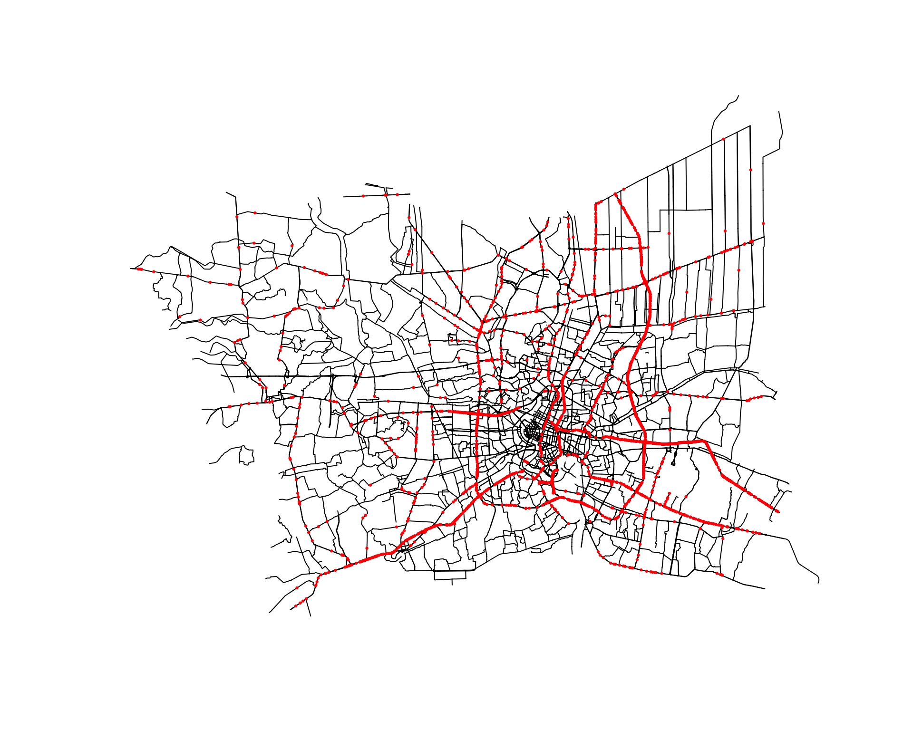
NoteInterpretation
Almost all accidents (3,594 of 3,599) lie within 100 m of a major road, which supports treating accidents as events on the major road network. The five excluded accidents are likely on minor roads or mislocated. The plot shows that accidents follow a small number of major roads, while much of the network carries few or no recorded accidents.
6. First-order Point Patterns Analysis
6.1 Temporal variation
ggplot(acc_bmr_sf, aes(x = Month_num)) +
geom_histogram(binwidth = 1) +
labs(x = "Month (1 = January)", y = "No. of accidents")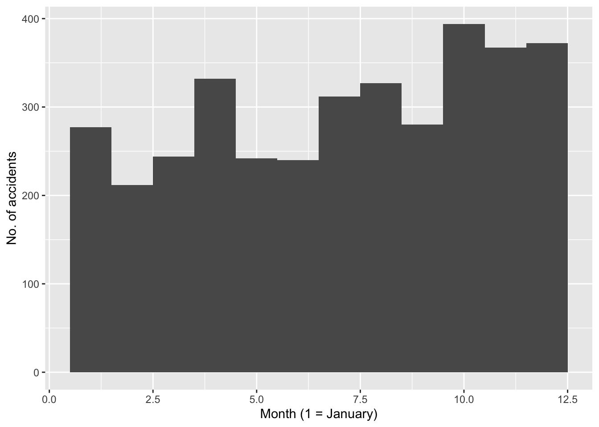
The red dashed lines mark the end of the New Year campaign (4 January, day 4), the Songkran “seven dangerous days” (11-17 April, days 101-107) and the start of the next New Year campaign (29 December, day 363).
ggplot(acc_bmr_sf, aes(x = DayofYear)) +
geom_histogram(binwidth = 1) +
geom_vline(xintercept = c(4, 101, 107, 363),
linetype = "dashed", colour = "red") +
labs(x = "Day of year, 2022", y = "No. of accidents per day")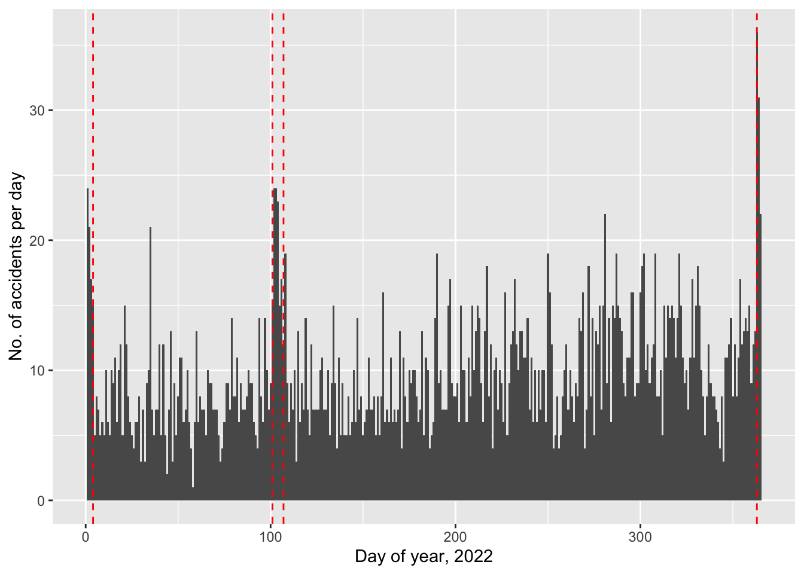
NoteInterpretation
Recorded accidents vary over time at two scales. Monthly counts range from about 210 in February to about 395 in October, with generally higher counts in the second half of 2022. Daily counts usually fall between 5 and 15, but the most prominent peaks coincide with the New Year and Songkran campaign periods, reaching about 36 accidents at the end of December. These peaks coincide with holiday travel periods, but the data alone cannot show why they occur. Counts are not adjusted for traffic volume, cover only recorded accidents on national roads, and come from a single year, so peaks indicate more recorded accidents rather than necessarily higher risk.
6.2 Intensity by province
bmr_sf <- bmr_sf %>%
mutate(n_acc = lengths(st_intersects(bmr_sf, acc_bmr_sf))) %>%
mutate(area_km2 = as.numeric(st_area(bmr_sf)) / 1000000) %>%
mutate(acc_per_km2 = n_acc / area_km2)
bmr_sf %>%
select(shapeName, n_acc, area_km2, acc_per_km2)Simple feature collection with 6 features and 4 fields
Geometry type: MULTIPOLYGON
Dimension: XY
Bounding box: xmin: 587130.4 ymin: 1484749 xmax: 712441.7 ymax: 1579087
Projected CRS: WGS 84 / UTM zone 47N
shapeName n_acc area_km2 acc_per_km2
1 Bangkok 1802 1570.7019 1.14725779
2 Nakhon Pathom Province 138 2088.4542 0.06607758
3 Nonthaburi Province 174 638.9550 0.27231964
4 Pathum Thani Province 491 1513.6408 0.32438344
5 Samut Sakhon Province 323 839.4175 0.38479063
6 Samut Prakan Province 671 952.9092 0.70415941
geometry
1 MULTIPOLYGON (((706791.8 15...
2 MULTIPOLYGON (((643530.5 15...
3 MULTIPOLYGON (((669340.7 15...
4 MULTIPOLYGON (((706784.4 15...
5 MULTIPOLYGON (((644134.6 15...
6 MULTIPOLYGON (((701236.5 15...6.3 Network KDE (NKDE)
6.3.1 Preparing the lixels objects
Before computing NKDE, the network is cut into lixels. The lixel length is set to 500 m and the minimum length to 250 m, about half of the 1 km bandwidth.
lixels <- lixelize_lines(network,
500,
mindist = 250)6.3.2 Generating line centre points
samples <- lines_center(lixels)6.3.3 Performing NKDE
The quartic kernel and the simple method are used, as in the NetSPAA workflow. The bandwidth is 1 km, measured along the network. grid_shape = c(3, 3) splits the large BMR network into a 3 x 3 grid so that the calculation fits in memory; it does not change the result.
densities <- nkde(network,
events = acc_net,
w = rep(1, nrow(acc_net)),
samples = samples,
kernel_name = "quartic",
bw = 1000,
div = "bw",
method = "simple",
digits = 1,
tol = 1,
grid_shape = c(3, 3),
max_depth = 8,
agg = 5,
sparse = TRUE,
verbose = FALSE)6.3.4 Visualising NKDE
The density values are inserted into samples and lixels, then rescaled from events per metre to events per kilometre.
samples$density <- densities
lixels$density <- densities
samples$density <- samples$density * 1000
lixels$density <- lixels$density * 1000
write_rds(lixels, "data/rds/lixels.rds")A static map is used instead of the interactive tmap_mode('view'), because drawing about 60,000 lixels interactively would make the HTML page very large. Road segments with zero density are drawn in grey, so that the coloured segments show where recorded accidents concentrate. Quantile classes are used because most segments have very low values.
lixels_pos <- lixels %>%
filter(density > 0)
tm_shape(bmr_sf) +
tm_polygons(fill = "grey95") +
tm_shape(network) +
tm_lines(col = "grey80") +
tm_shape(lixels_pos) +
tm_lines(col = "density",
col.scale = tm_scale_intervals(style = "quantile",
values = "viridis"),
col.legend = tm_legend(title = "NKDE (events per km)"),
lwd = 2) +
tm_title("Network KDE of road accidents, BMR 2022")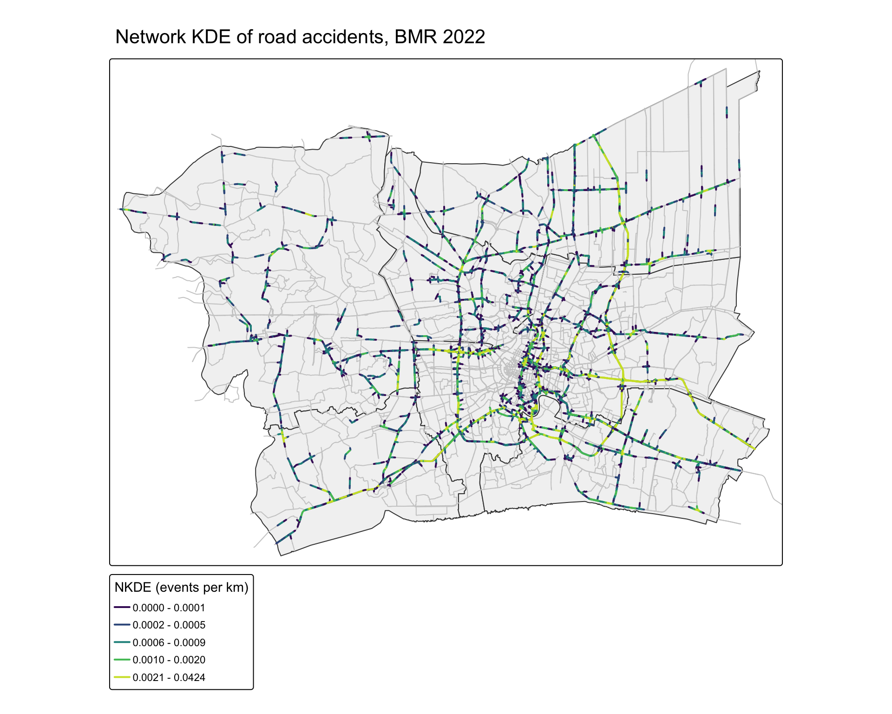
NoteInterpretation
NKDE (quartic kernel, 1 km bandwidth measured along the network) estimates accident density on each road segment rather than across continuous space. Density is concentrated on a small number of specific roads: a north–south corridor through eastern Bangkok into Pathum Thani, roads across southern Bangkok into Samut Prakan, where the highest values occur, and a south-western corridor towards Samut Sakhon. Most of the major road network, including much of inner Bangkok, shows zero or near-zero density. Because density is calculated along roads, it identifies particular road segments rather than broad areas, which is more directly useful for targeting interventions. It reflects only accidents recorded by national road agencies, and is not adjusted for traffic volume, so high density does not necessarily mean higher risk.
6.4 Planar KDE for comparison
Planar KDE is computed to compare the network view with the conventional view, in which accidents can occur anywhere in the window.
6.4.1 Automatic bandwidth selection
bw.diggle(accBMR_ppp.km) sigma
0.02307687 bw.ppl(accBMR_ppp.km) sigma
0.7507077 bw.scott(accBMR_ppp.km) sigma.x sigma.y
5.238214 4.082151 kde_accBMR.bw <- density(accBMR_ppp.km,
sigma = bw.diggle,
edge = TRUE,
kernel = "gaussian")
kde_accBMR.ppl <- density(accBMR_ppp.km,
sigma = bw.ppl,
edge = TRUE,
kernel = "gaussian")
kde_accBMR.scott <- density(accBMR_ppp.km,
sigma = bw.scott,
edge = TRUE,
kernel = "gaussian")
par(mfrow = c(1, 3))
plot(kde_accBMR.bw, main = "bw.diggle")
plot(kde_accBMR.ppl, main = "bw.ppl")
plot(kde_accBMR.scott, main = "bw.scott")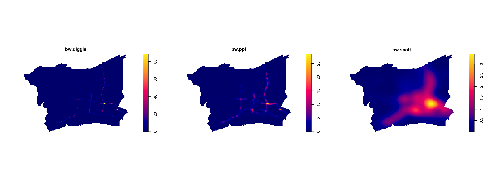
6.4.2 Bandwidth sensitivity
par(mfrow = c(2, 2))
for (s in c(0.5, 1, 2, 5)) {
plot(density(accBMR_ppp.km,
sigma = s,
edge = TRUE,
kernel = "gaussian"),
main = paste("sigma =", s, "km"))
}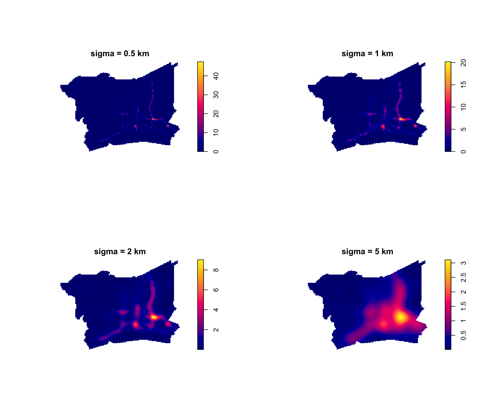
6.4.3 Fixed vs adaptive bandwidth
kde_accBMR_adaptive <- adaptive.density(accBMR_ppp.km,
method = "kernel")
par(mfrow = c(1, 2))
plot(kde_accBMR.ppl, main = "Fixed bandwidth (bw.ppl)")
plot(kde_accBMR_adaptive, main = "Adaptive bandwidth")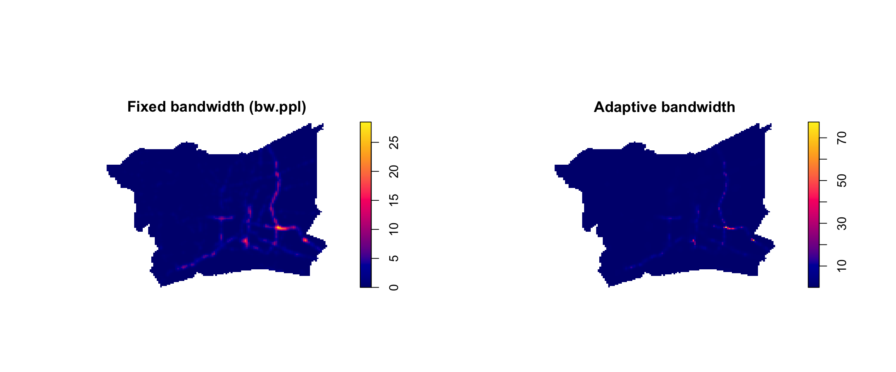
6.4.4 Mapping the selected planar KDE
bw.ppl (0.79 km) is selected. bw.diggle (0.09 km) and the adaptive KDE produce very spiky surfaces dominated by a few sharp peaks, while bw.scott (about 5.2 km x 4.1 km) and the 5 km bandwidth merge the corridors into one broad hotspot. The sensitivity plots show that bandwidths of about 0.5-1 km preserve the corridor structure. For mapping, the KDE is computed on the metre-based ppp object, so that the raster coordinates match EPSG:32647.
kde_accBMR_m <- density(accBMR_ppp,
sigma = bw.ppl,
edge = TRUE,
kernel = "gaussian")
kde_accBMR_terra <- rast(kde_accBMR_m)
crs(kde_accBMR_terra) <- "EPSG:32647"
kde_accBMR_terraclass : SpatRaster
size : 128, 128, 1 (nrow, ncol, nlyr)
resolution : 978.9945, 737.0174 (x, y)
extent : 587130.4, 712441.7, 1484749, 1579087 (xmin, xmax, ymin, ymax)
coord. ref. : WGS 84 / UTM zone 47N (EPSG:32647)
source(s) : memory
name : lyr.1
min value : -0
max value : 0.000029
unit : unittm_shape(kde_accBMR_terra) +
tm_raster(col.scale = tm_scale_continuous(values = "viridis"),
col.legend = tm_legend(title = "Density values")) +
tm_shape(bmr_sf) +
tm_borders(col = "grey40") +
tm_title("Planar KDE of road accidents, BMR 2022") +
tm_graticules(labels.size = 0.7) +
tm_compass()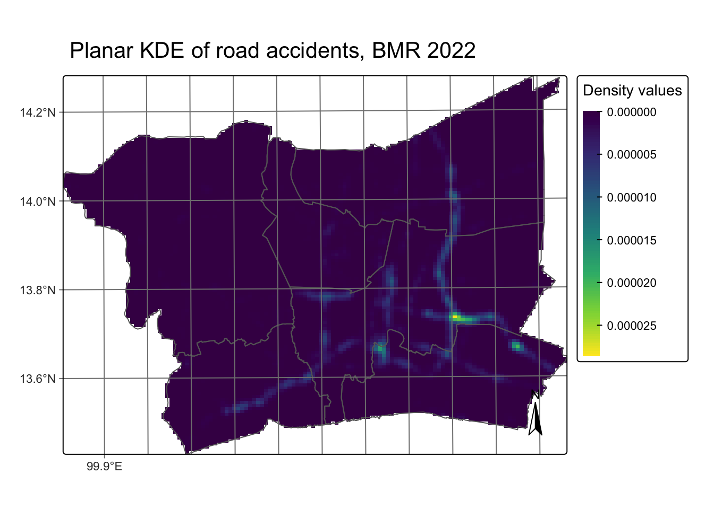
NoteInterpretation
Using the bw.ppl bandwidth (0.79 km), the planar KDE shows the same corridors as the NKDE: a north–south corridor through Bangkok into Pathum Thani, an east–west corridor across southern Bangkok into Samut Prakan, and a south-western corridor towards Samut Sakhon, with the highest intensity in southern Bangkok near the Samut Prakan boundary. The location of these hotspots is stable across bandwidths of 0.5-2 km. However, planar KDE spreads intensity into areas without roads, such as fields and rivers, and cannot show which particular road carries the accidents. Comparing it with Section 6.3 shows that the network view gives the same broad picture but locates it on specific road segments.
6.5 Spatio-temporal KDE by month
acc_month <- acc_bmr_sf %>%
select(Month_num)
acc_month_ppp <- as.ppp(acc_month)
acc_month_owin <- acc_month_ppp[bmr_owin]
summary(acc_month_owin)Marked planar point pattern: 3599 points
Average intensity 4.732986e-07 points per square unit
*Pattern contains duplicated points*
Coordinates are given to 10 decimal places
marks are numeric, of type 'double'
Summary:
Min. 1st Qu. Median Mean 3rd Qu. Max.
1.000 4.000 7.000 6.994 10.000 12.000
Window: polygonal boundary
single connected closed polygon with 1699 vertices
enclosing rectangle: [587130.4, 712441.7] x [1484748.9, 1579087.2] units
(125300 x 94340 units)
Window area = 7604080000 square units
Fraction of frame area: 0.643st_kde <- spattemp.density(acc_month_owin)
summary(st_kde)Spatiotemporal Kernel Density Estimate
Bandwidths
h = 4882.467 (spatial)
lambda = 0.0285 (temporal)
No. of observations
3599
Spatial bound
Type: polygonal
2D enclosure: [587130.4, 712441.7] x [1484749, 1579087]
Temporal bound
[1, 12]
Evaluation
128 x 128 x 12 trivariate lattice
Density range: [9.448582e-22, 2.845214e-09]tims <- c(1, 2, 3, 4, 5, 6, 7, 8, 9, 10, 11, 12)
par(mfcol = c(3, 4))
for (i in tims) {
plot(st_kde, i,
override.par = FALSE,
fix.range = TRUE,
main = paste("KDE at month", i))
}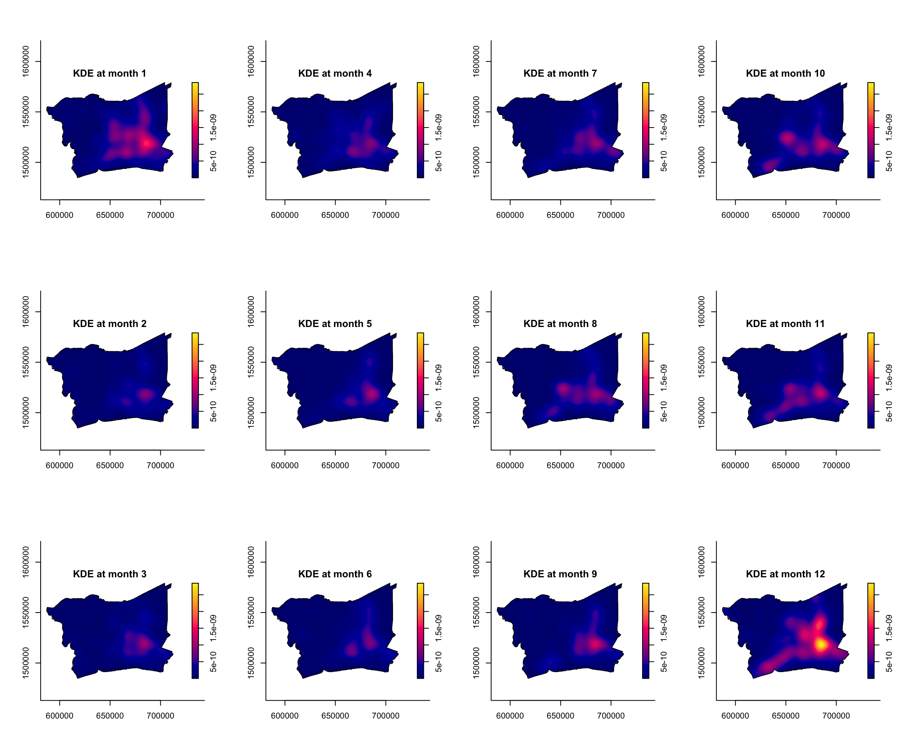
NoteInterpretation
The spatio-temporal KDE shows that the location of the main accident hotspot, in south-eastern Bangkok near the Samut Prakan boundary, is stable throughout 2022, while its intensity varies by month. Intensity is highest in December and relatively high in January, and lowest in February, March, May and June, consistent with the monthly counts in Section 6.1. From around August, a secondary concentration towards Samut Sakhon also becomes more visible. The automatically selected spatial bandwidth (about 4.9 km) is large, so these maps show broad hotspots rather than individual road corridors. The temporal bandwidth is very small relative to the monthly time unit, so each panel mainly reflects that month’s accidents. Monthly aggregation may also hide short peaks such as the Songkran week.
6.6 Spatio-temporal KDE by day of year
acc_yday_ppp <- acc_bmr_sf %>%
select(DayofYear) %>%
as.ppp()
acc_yday_owin <- acc_yday_ppp[bmr_owin]
summary(acc_yday_owin)Marked planar point pattern: 3599 points
Average intensity 4.732986e-07 points per square unit
*Pattern contains duplicated points*
Coordinates are given to 10 decimal places
marks are numeric, of type 'double'
Summary:
Min. 1st Qu. Median Mean 3rd Qu. Max.
1.0 104.0 208.0 197.5 292.0 365.0
Window: polygonal boundary
single connected closed polygon with 1699 vertices
enclosing rectangle: [587130.4, 712441.7] x [1484748.9, 1579087.2] units
(125300 x 94340 units)
Window area = 7604080000 square units
Fraction of frame area: 0.643BOOT.spattemp() selects the spatial and temporal bandwidths by bootstrap.
set.seed(1234)
BOOT.spattemp(acc_yday_owin)Initialising...Done.
Optimising...
h = 4882.467 ; lambda = 23.86965
h = 5370.714 ; lambda = 23.86965
h = 4882.467 ; lambda = 512.1164
h = 5004.529 ; lambda = 267.993
h = 5065.56 ; lambda = 145.9313
h = 5096.075 ; lambda = 84.90049
h = 4607.828 ; lambda = 84.90049
h = 4226.386 ; lambda = 115.4159
h = 4439.994 ; lambda = 176.4468
h = 4771.849 ; lambda = 62.01392
h = 3902.159 ; lambda = 92.52934
h = 3305.201 ; lambda = 96.34377
h = 2759.738 ; lambda = 149.7458
h = 3262.766 ; lambda = 127.8128
h = 2341.582 ; lambda = 108.7407
h = 2812.783 ; lambda = 110.4095
h = 2855.218 ; lambda = 78.94045
h = 2651.444 ; lambda = 54.50427
h = 3347.637 ; lambda = 64.87474
h = 3213.923 ; lambda = 76.25843
h = 2763.94 ; lambda = 58.8551
h = 3169.886 ; lambda = 86.9716
h = 2899.255 ; lambda = 68.22727
h = 2966.913 ; lambda = 72.91335
h = 2608.208 ; lambda = 75.59537
h = 3062.495 ; lambda = 76.09266
Done. h lambda
3062.49456 76.09266 # TODO: check h and lambda against the BOOT.spattemp() output above;
# they were 3061.77 and 76.07 in the earlier run, and may change slightly
kde_yday <- spattemp.density(acc_yday_owin,
h = 3062,
lambda = 76)
summary(kde_yday)Spatiotemporal Kernel Density Estimate
Bandwidths
h = 3062 (spatial)
lambda = 76 (temporal)
No. of observations
3599
Spatial bound
Type: polygonal
2D enclosure: [587130.4, 712441.7] x [1484749, 1579087]
Temporal bound
[1, 365]
Evaluation
128 x 128 x 365 trivariate lattice
Density range: [7.881223e-19, 5.140111e-12]The four days shown are mid-February, mid-April, mid-July and mid-October. Days near the start and end of the year are avoided because estimates there are affected by the temporal boundary.
tims <- c(46, 105, 196, 288)
par(mfcol = c(2, 2))
for (i in tims) {
plot(kde_yday, i,
override.par = FALSE,
fix.range = TRUE,
main = paste("KDE at day", i))
}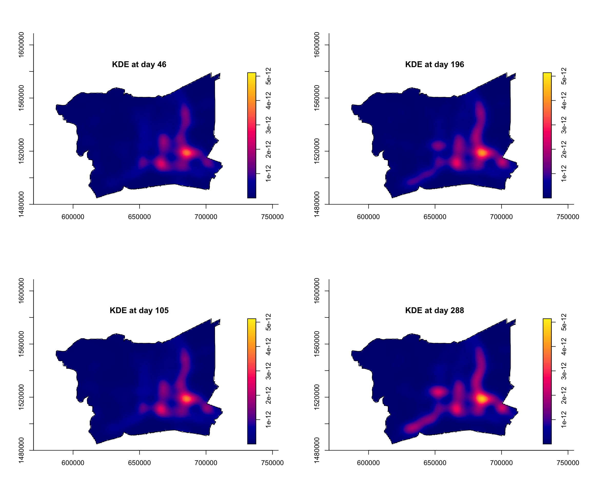
NoteInterpretation
Using day of year with bootstrap-selected bandwidths (h ≈ 3.1 km, lambda ≈ 76 days), the STKDE shows a stable core and a changing periphery. The main hotspot in south-eastern Bangkok near the Samut Prakan boundary, and the north–south corridor into Pathum Thani, persist throughout 2022. In contrast, the south-western corridor towards Samut Sakhon is faint in February and April but becomes increasingly prominent in July and October, when overall intensity is also higher, consistent with the monthly counts in Section 6.1. However, the 76-day temporal bandwidth pools accidents over roughly two to three months, so short-lived peaks such as the Songkran and New Year holidays are smoothed out; the daily graphic in Section 6.1 remains the evidence for those peaks.
7. Second-order Point Patterns Analysis
7.1 Network K- and G-function analysis
Research question: after accounting for the fact that accidents can only occur on the road network, are accidents clustered, regular or approximately random along the network?
Hypotheses:
H0: The observed accidents are uniformly distributed over the major road network in Bangkok.
H1: The observed accidents are not uniformly distributed over the major road network in Bangkok.
The CSR test is based on the binomial point process, which assumes accidents are randomly and independently distributed over the network. If H0 is rejected, accidents may be spatially interacting and dependent on each other, forming non-random patterns.
The analysis is restricted to Bangkok, because simulating random points on the full BMR network is very slow. kfunctions() computes both the network K-function and the network G-function, and compares them with 50 simulations of random points on the network.
bkk_sf <- bmr_sf %>%
filter(shapeName == "Bangkok")
network_bkk <- network %>%
filter(lengths(st_intersects(network, bkk_sf)) > 0)
acc_bkk <- acc_net %>%
filter(lengths(st_intersects(acc_net, bkk_sf)) > 0)
nrow(acc_bkk)[1] 1801kfun_acc <- kfunctions(network_bkk,
acc_bkk,
start = 0,
end = 5000,
step = 100,
width = 200,
nsim = 50,
resolution = 50,
verbose = FALSE,
conf_int = 0.05)
write_rds(kfun_acc, "data/rds/kfun_acc.rds")kfun_acc <- read_rds("data/rds/kfun_acc.rds")The blue line is the empirical network K-function and the grey envelope shows the 2.5%-97.5% interval of the 50 simulations. A blue line above the envelope indicates clustering at that distance, and below it indicates regularity.
kfun_acc$plotk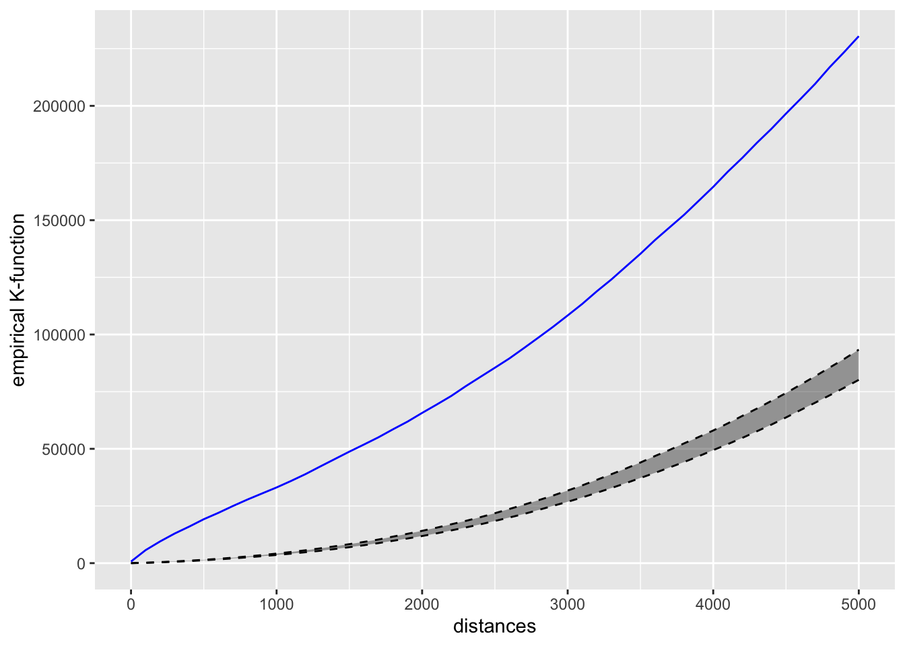
The network G-function counts pairs of accidents within each 200 m ring, so it shows at which specific distances clustering or regularity occurs.
kfun_acc$plotg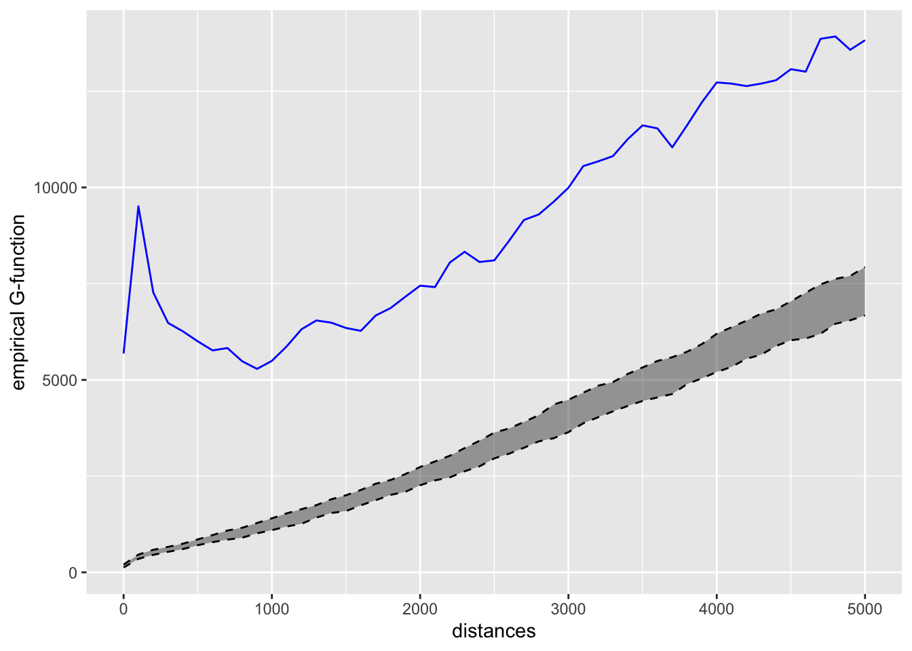
NoteInterpretation
7.2 Planar tests against CSR, for comparison
These tests use planar CSR as the null model: accidents are assumed equally likely anywhere in BMR, including where there are no roads. They are included to show how much the conclusion depends on the null model.
H0: accidents are randomly distributed in BMR (CSR). H1: accidents are clustered.
7.2.1 Clark-Evans test
clarkevans.test(accBMR_ppp.km,
correction = "none",
clipregion = NULL,
alternative = c("clustered"),
method = "MonteCarlo",
nsim = 99)
Clark-Evans test
No edge correction
Monte Carlo test based on 99 simulations of CSR with fixed n
data: accBMR_ppp.km
R = 0.26518, p-value = 0.01
alternative hypothesis: clustered (R < 1)7.2.2 G-function
G_acc.csr <- envelope(accBMR_ppp.km, Gest, nsim = 99)Generating 99 simulated realisations of CSR ...
1, 2, 3, 4, 5, 6, 7, 8, 9, 10, 11, 12, 13, 14, 15, 16, 17, 18, 19, 20,
21, 22, 23, 24, 25, 26, 27, 28, 29, 30, 31, 32, 33, 34, 35, 36, 37, 38, 39, 40,
41, 42, 43, 44, 45, 46, 47, 48, 49, 50, 51, 52, 53, 54, 55, 56, 57, 58, 59, 60,
61, 62, 63, 64, 65, 66, 67, 68, 69, 70, 71, 72, 73, 74, 75, 76, 77, 78, 79, 80,
81, 82, 83, 84, 85, 86, 87, 88, 89, 90, 91, 92, 93, 94, 95, 96, 97, 98,
99.
Done.plot(G_acc.csr, xlim = c(0, 2))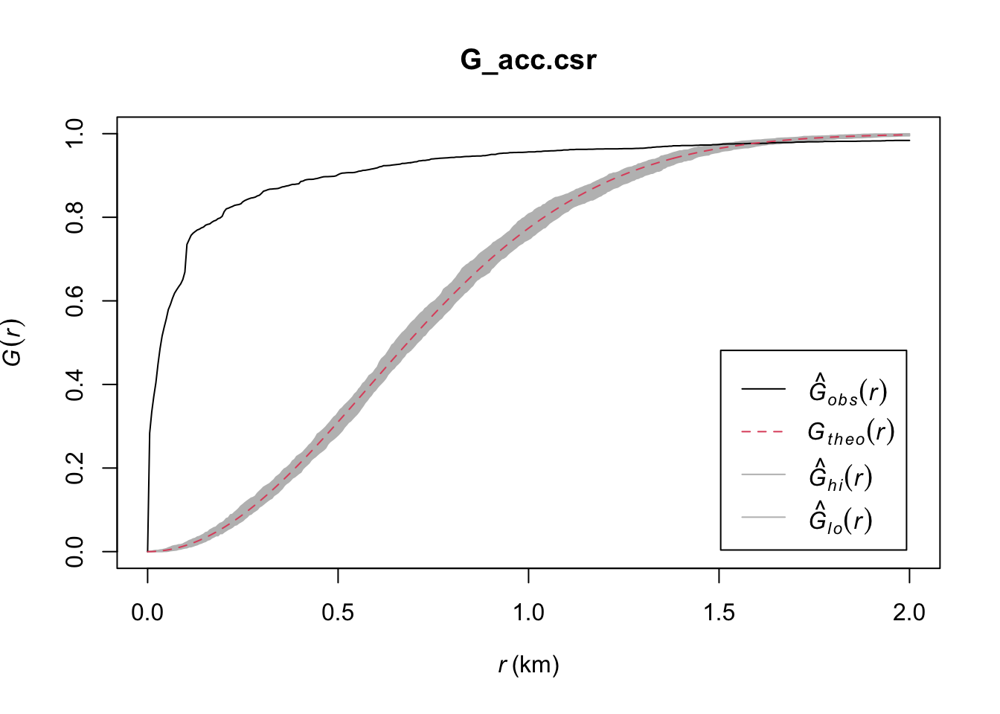
7.2.3 L-function
With 99 simulations and rank = 1, the global envelope corresponds to a significance level of 0.01.
L_acc.csr <- envelope(accBMR_ppp.km, Lest, nsim = 99, rank = 1, glocal = TRUE)
write_rds(L_acc.csr, "data/rds/L_acc_csr.rds")L_acc.csr <- read_rds("data/rds/L_acc_csr.rds")
plot(L_acc.csr, . - r ~ r, xlab = "d (km)", ylab = "L(d)-r")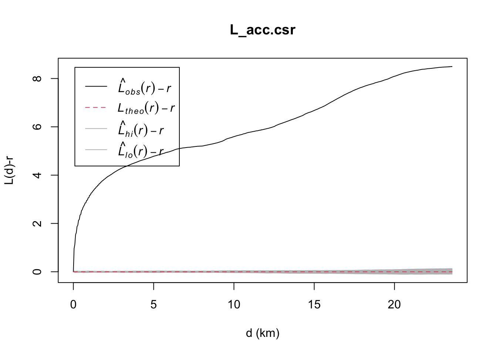
NoteInterpretation
Against planar CSR, all tests indicate strong clustering: the Clark-Evans ratio is well below 1 (, p = 0.01), and the G- and L-functions lie far above their envelopes. The G-function also jumps at distance 0, because accidents sharing exact locations have a nearest-neighbour distance of zero. However, planar CSR assumes accidents can occur anywhere in BMR, whereas Sections 5.10 and 6.3 show they are confined to a small number of roads. Much of this apparent clustering therefore reflects the road network itself. This is why the network K-function in Section 7.1, which uses CSR on the network as the null model, is the main second-order test in this study.
7.3 Spatio-temporal K-function
Research question: do accidents that are close in space also tend to be close in time?
coords <- st_coordinates(acc_bmr_sf)
acc_df <- data.frame(
x = coords[, 1],
y = coords[, 2],
t = acc_bmr_sf$DayofYear)
acc_stpp <- as.3dpoints(acc_df)
class(acc_stpp)[1] "stpp"set.seed(1234)
acc_stik <- STIKhat(acc_stpp)
plotK(acc_stik)
NoteInterpretation
8. Value-added Analysis: Sensitivity of NKDE to Bandwidth
Research question: are the high-density road segments identified in Section 6.3 robust to the choice of NKDE bandwidth?
The NKDE is recomputed with bandwidths of 500 m and 2 km, using the same lixels, samples and settings as Section 6.3.
densities_500 <- nkde(network,
events = acc_net,
w = rep(1, nrow(acc_net)),
samples = samples,
kernel_name = "quartic",
bw = 500,
div = "bw",
method = "simple",
digits = 1,
tol = 1,
grid_shape = c(3, 3),
max_depth = 8,
agg = 5,
sparse = TRUE,
verbose = FALSE)
densities_2000 <- nkde(network,
events = acc_net,
w = rep(1, nrow(acc_net)),
samples = samples,
kernel_name = "quartic",
bw = 2000,
div = "bw",
method = "simple",
digits = 1,
tol = 1,
grid_shape = c(3, 3),
max_depth = 8,
agg = 5,
sparse = TRUE,
verbose = FALSE)
lixels$density_500 <- densities_500 * 1000
lixels$density_2000 <- densities_2000 * 1000map_500 <- tm_shape(network) +
tm_lines(col = "grey80") +
tm_shape(lixels %>% filter(density_500 > 0)) +
tm_lines(col = "density_500",
col.scale = tm_scale_intervals(style = "quantile",
values = "viridis"),
col.legend = tm_legend(title = "NKDE, bw = 500 m"),
lwd = 2)
map_2000 <- tm_shape(network) +
tm_lines(col = "grey80") +
tm_shape(lixels %>% filter(density_2000 > 0)) +
tm_lines(col = "density_2000",
col.scale = tm_scale_intervals(style = "quantile",
values = "viridis"),
col.legend = tm_legend(title = "NKDE, bw = 2 km"),
lwd = 2)
tmap_arrange(map_500, map_2000, ncol = 2)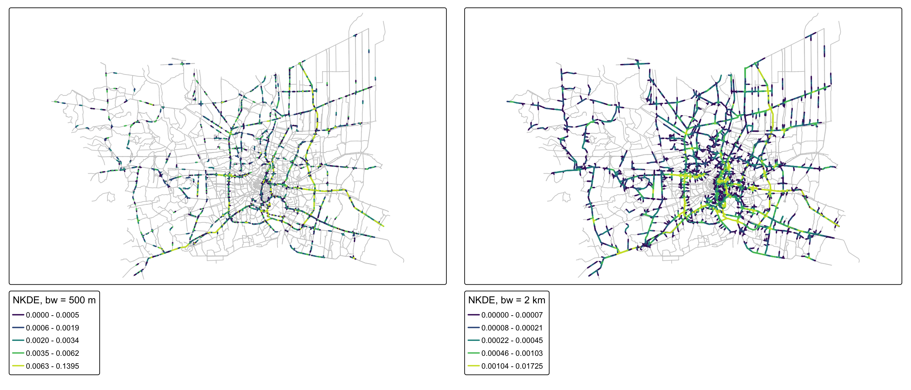
The summary statistics show how the range of density values changes with the bandwidth.
summary(lixels$density_500) Min. 1st Qu. Median Mean 3rd Qu. Max.
0.0000000 0.0000000 0.0000000 0.0009199 0.0000000 0.1394506 summary(lixels$density) Min. 1st Qu. Median Mean 3rd Qu. Max.
0.000000 0.000000 0.000000 0.000577 0.000415 0.042352 summary(lixels$density_2000) Min. 1st Qu. Median Mean 3rd Qu. Max.
0.000e+00 0.000e+00 6.496e-05 4.455e-04 4.375e-04 1.725e-02
NoteInterpretation
9. Integrated Findings and Discussion
What does the first-order analysis reveal? Recorded accidents are highly uneven in space and time. NKDE shows that density is confined to a small number of specific roads, particularly corridors across southern Bangkok into Samut Prakan, into Pathum Thani and towards Samut Sakhon (Section 6.3); planar KDE shows the same corridors (Section 6.4). Temporally, counts are higher in the second half of 2022 (peaking in October) and spike during the New Year and Songkran campaign periods (Section 6.1), while the hotspot locations are stable through the year (Sections 6.5 and 6.6).
What does the second-order analysis reveal? Against planar CSR, accidents are strongly clustered at all distances tested (Section 7.2). Against CSR on the road network, .
How do they complement each other? The first-order results show that accidents are concentrated on a few roads, which explains much of the strong planar clustering. The network second-order test asks whether, along those roads, accidents are closer together than random placement on the network would produce.
Are the findings consistent across analytical views? The location of the main corridors is consistent across NKDE, planar KDE at 0.5-2 km bandwidths, and spatio-temporal KDE. The strength of clustering is not: it depends strongly on whether the null model is planar CSR or CSR on the network.
What assumptions or limitations matter? The most important are the observation process (only national road agencies’ records), the absence of traffic-volume data, the restriction of the network K-function to Bangkok, and sensitivity to bandwidth; these are detailed in Section 11.
Are there alternative explanations? Concentrations along corridors may reflect higher traffic volumes rather than higher risk per vehicle; network CSR assumes equal exposure on every road, which is unlikely. Repeated locations may partly reflect recording practices, such as locating accidents at fixed reference points, rather than true hotspots. Low intensity in inner Bangkok may reflect missing records from city-managed streets rather than safer roads.
10. Public-safety Planning and Management Implications
Supported directly by the analysis
Prioritising road segments rather than areas. NKDE shows that recorded accidents are concentrated on a small number of specific roads, particularly the corridors across southern Bangkok into Samut Prakan, the north–south corridor into Pathum Thani, and the south-western corridor towards Samut Sakhon. Road-safety audits, enforcement and engineering reviews can therefore be targeted at identified road segments rather than spread evenly across provinces.
Focusing on repeated locations. Some accidents share exact locations (Section 5.9). These locations are natural candidates for site-level investigation, such as junction design, signage and lighting.
Timing interventions. Accidents are more frequent in the second half of the year and during the New Year and Songkran periods. Enforcement and campaign resources can be scheduled to match these periods.
Monitoring emerging corridors. The south-western corridor towards Samut Sakhon becomes more prominent from mid-year onwards (Section 6.6), suggesting it should be monitored over future years to see whether this pattern persists.
Emergency response. Because accidents are concentrated along identifiable road segments, the locations of ambulance and rescue units can be evaluated against these segments, for example by checking response distances along the network.
Requiring additional information
Assessing risk rather than counts. The analysis identifies where recorded accidents concentrate, not where roads are most dangerous. Traffic volume data would be needed to convert counts into accident rates per vehicle-kilometre before concluding that a road segment is high-risk.
Explaining causes. The analysis does not show why accidents concentrate on these roads or at these times. Attributes such as presumed cause, vehicle type and road design, together with field inspections, would be needed before designing specific engineering or behavioural interventions.
Covering city streets. All records come from national road agencies. Integrating data from the Bangkok Metropolitan Administration would be necessary before drawing conclusions about inner Bangkok, where low intensity may reflect missing records.
Evaluating interventions. Multi-year data (for example, 2019–2022) would be needed to confirm whether the identified corridors and seasonal patterns are stable, and to evaluate whether past campaigns have had any effect.
11. Limitations
- Observation process. All records come from national road agencies (Department of Highways 80.1%, Expressway Authority 13.1%, Department of Rural Roads 6.8%). Accidents on city-managed streets are likely missing, so patterns describe recorded accidents on these road types only.
- No exposure data. Without traffic volumes, concentrations cannot be interpreted as higher risk, and network CSR assumes equal exposure on all roads.
- Location quality. 189 records lacked coordinates, and some accidents share exact locations, possibly reflecting fixed reference points. These were kept, which inflates the planar G-function at distance zero.
- Single year. Only 2022 is analysed, so patterns may not be stable across years.
- Bandwidth sensitivity. Planar KDE and NKDE depend on bandwidth; results were compared at several bandwidths, but not all choices can be exhausted.
- Limited simulations and extent. The network K-function uses 50 simulations and covers Bangkok only, for computational reasons.
- Temporal smoothing. The day-of-year STKDE uses a 76-day temporal bandwidth, which smooths out short holiday peaks; the space–time K-function assumes constant intensity.
- Network data. The OSM road network is a 2026 extract, whereas accidents are from 2022, and only major road classes were included. Roads built after 2022 appear in the network without any accidents.
- Study window. BMR is defined by six provincial boundaries; a different definition of the metropolitan area could change edge effects and intensity estimates.
12. References
- Asian Transport Observatory. (2025). Thailand Road Safety Profile 2025.
- Baddeley, A., Rubak, E., & Turner, R. (2015). Spatial Point Patterns: Methodology and Applications with R. Chapman and Hall/CRC.
- Davies, T. M., Marshall, J. C., & Hazelton, M. L. (2018). Tutorial on kernel estimation of continuous spatial and spatiotemporal relative risk. Statistics in Medicine, 37(7), 1191-1221.
- Gabriel, E., Rowlingson, B. S., & Diggle, P. J. (2013). stpp: An R package for plotting, simulating and analyzing spatio-temporal point patterns. Journal of Statistical Software, 53(2), 1-29.
- Gelb, J. (2021). spNetwork: A package for network kernel density estimation. The R Journal, 13(2), 102-116.
- Kam, T. S. R for Geospatial Data Science and Analytics, Chapter 7: Network Constrained Spatial Point Patterns Analysis. https://r4gdsa.netlify.app/chap07
- Okabe, A., & Sugihara, K. (2012). Spatial Analysis along Networks: Statistical and Computational Methods. Wiley.
- OpenStreetMap contributors. Thailand extract via Geofabrik, 21 September 2026.
- Runfola, D. et al. (2020). geoBoundaries: A global database of political administrative boundaries. PLOS ONE, 15(4), e0231866.
- Thaweewat R. Thailand Road Accident [2019-2022]. Kaggle.
- World Health Organization. (2023). Global status report on road safety 2023. Geneva: WHO.